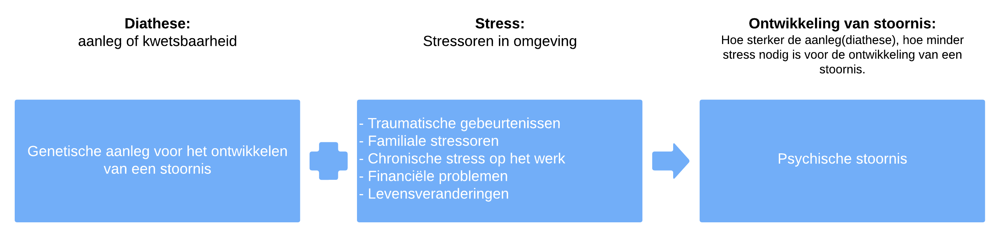

Risico en beschermende factoren
Vaak wordt er gekeken naar groepen om te vergelijken in plaats van individuen omdat er altijd uitschieters zullen zijn. Een voorbeeld is dat kinderen van ouders met psychische stoornissen een verhoogd risico hebben op het ontwikkelen van vergelijkbare stoornissen. Het is belangrijk om te benadrukken dat een beschermende factor een factor is die, wanneer er een bepaald risico aanwezig is, de kans op het ontwikkelen van een stoornis vermindert, terwijl een risicofactor juist de kans op de ontwikkeling van een stoornis vergroot.
Biologische Factoren
Biologische factoren spelen een cruciale rol in de ontwikkeling. Genetische aanleg, prenatale programmering en sekse hebben allemaal invloed op het gedrag van een individu.
- Genetische aanleg: Dit verwijst naar de genen die een individu erft van zijn ouders. Bijvoorbeeld, genetische aanleg voor depressie kan de gevoeligheid voor depressieve stoornissen vergroten.
- Prenatale programmering: Dit omvat de invloed van de omgeving tijdens de zwangerschap op de ontwikkeling van de baby. Bijvoorbeeld, blootstelling aan bepaalde chemicaliën kan de neurologische ontwikkeling beïnvloeden.
- Sekse: Biologische verschillen tussen mannen en vrouwen kunnen ook gedragsverschillen veroorzaken. Bijvoorbeeld, bepaalde psychische stoornissen komen vaker voor bij vrouwen dan bij mannen.
Gedragskenmerken
Gedragskenmerken zoals temperament, gehechtheidstype en psychische stoornissen spelen ook een belangrijke rol in de ontwikkeling.
- Temperament: Dit verwijst naar de aangeboren neiging van een individu om op een bepaalde manier te reageren op prikkels. Bijvoorbeeld, een kind met een moeilijk temperament kan gevoeliger zijn voor stress.
- Gehechtheidstype: Dit beschrijft hoe een kind emotioneel verbonden is met zijn verzorger. Een onveilige hechting kan leiden tot emotionele problemen.
- Psychische stoornis: De aanwezigheid van psychische stoornissen kan het gedrag van een individu aanzienlijk beïnvloeden. Bijvoorbeeld, angststoornissen kunnen leiden tot vermijdingsgedrag.
Ingrijpende Gebeurtenissen (Omgevingsfactoren)
Ingrijpende gebeurtenissen in de omgeving kunnen een aanzienlijke impact hebben op de ontwikkeling van een individu. Enkele voorbeelden zijn echtscheiding, mishandeling en verwaarlozing, eenoudergezinnen, en andere omgevingsfactoren zoals gezinsomstandigheden, armoede, school, omgeving, leeftijdsgenoten, en culturele waarden en normen.
Terugkoppelend naar het vorige hoofdstuk over Bronfenbrenner, laten deze omgevingsfactoren zien hoe de verschillende systemen waarin een individu zich bevindt, elkaar beïnvloeden. ontwikkelingstheorie
Gezinsomstandigheden
De omstandigheden binnen het gezin hebben een aanzienlijke invloed op de ontwikkeling van een kind. Een stabiele en ondersteunende gezinsomgeving kan een beschermende factor zijn. Bijvoorbeeld, een gezin dat open communiceert en zorgt voor emotionele steun, draagt bij aan een gezonde ontwikkeling van het kind.
Armoede
Armoede kan een risicofactor zijn die de ontwikkeling van kinderen beïnvloedt. Kinderen die opgroeien in armoede ervaren mogelijk beperkte toegang tot onderwijs, gezondheidszorg en andere middelen. Dit kan leiden tot stress en kan de ontwikkeling van cognitieve en sociale vaardigheden beïnvloeden.
School
De schoolomgeving speelt een belangrijke rol in de ontwikkeling van kinderen. Een ondersteunende leeromgeving met bekwame leerkrachten kan de cognitieve en sociaal-emotionele ontwikkeling bevorderen. Stressvolle situaties op school, zoals pesten of academische uitdagingen, kunnen daarentegen risicofactoren zijn.
Omgeving
De bredere omgeving waarin een kind opgroeit, zoals de buurt, kan zowel risico- als beschermende factoren bevatten. Een veilige en stimulerende buurt kan een positieve invloed hebben op de ontwikkeling, terwijl een onveilige omgeving of blootstelling aan geweld risico's met zich meebrengt.
Opvoedingsstijl en Gedrag
Opvoedingsstijl en gedrag van ouders hebben aanzienlijke invloed op de ontwikkeling van een kind.
Warmte en ondersteuning zijn essentieel voor een gezonde ontwikkeling. Er zijn vier opvoedingsstijlen:
- Autoritatief: Ouders stellen grenzen maar zijn ondersteunend en responsief.
- Autoritair: Ouders stellen strenge grenzen zonder veel ondersteuning.
- Toegeeflijk: Ouders zijn ondersteunend maar stellen weinig grenzen.
- Verwaarlozend: Ouders stellen weinig grenzen en zijn weinig ondersteunend.
Beschermende Factoren
Op verschillende niveaus kunnen factoren beschermend werken tegen de ontwikkeling van stoornissen:
Op Niveau van Individu
- Een hoog IQ: Intelligentie kan beschermend werken tegen de ontwikkeling van bepaalde stoornissen.
- Kinderen met goede intrapersoonlijke relaties: Sterke interne relaties kunnen beschermen tegen negatieve invloeden van buitenaf.
- Kinderen met een gemakkelijk temperament: Een positief temperament kan een buffer zijn tegen stress en moeilijkheden.
- Interne locus of control: Een gevoel van controle over het eigen leven kan beschermen tegen de negatieve effecten van externe factoren.
- Genetische predispositie: Specifieke genetische kenmerken kunnen beschermend werken.
Beschermende Factoren op Niveau van Familie en Omgeving
- Ouder(s) die materiële en sociaal-emotionele bescherming bieden.
- Een warme en ondersteunende familieomgeving.
- Monitoring door ouders om risico's te vermijden, zoals verkeerde vrienden en ideeën.
- Sterke ouderlijke relaties en een goede band tussen ouders en kind.
- Psycho-educatie voor ouders over opvoedingstechnieken.
- Aanwezigheid van broers en zussen met een goede band.
- Sociale steun van vrienden, familie en buren.
- Een buurt met sociale cohesie waarbij mensen elkaar ondersteunen.
- Positieve leerervaringen die leren bevorderen en motiveren.
Het begrijpen van deze risico- en beschermende factoren is cruciaal om een holistisch beeld van de ontwikkeling van kinderen te krijgen. De combinatie van negatieve genetische en omgevingsfactoren kan leiden tot een verhoogd risico op afwijkend gedrag.
Culturele Invloeden en Risico- en Beschermende Factoren
Culturele invloeden spelen een essentiële rol in het begrijpen van gedrag bij kinderen. Normen en waarden variëren sterk tussen culturen, waardoor het interpreteren van gedragingen contextafhankelijk is. Binnen deze context is het van belang om rekening te houden met risico- en beschermende factoren die de ontwikkeling beïnvloeden.
Diathese-Stress Model
Het Diathese-Stress Model is een waardevol kader om het ontstaan van psychische stoornissen te begrijpen. Dit model stelt dat psychische problemen voortkomen uit de interactie tussen biologische aanleg (diathese) en diverse omgevingsstressoren, die een breed scala aan factoren omvatten.
Het begrijpen van deze interactie is essentieel bij het inschatten van de ontwikkeling van jeugdigen, waarbij zowel biologische factoren als omgevingsinvloeden worden meegenomen. Het model benadrukt de noodzaak om de kwetsbaarheid van individuen in hun unieke ontwikkelingsfase te erkennen en passende begeleiding te bieden om een gezonde ontwikkeling te bevorderen.